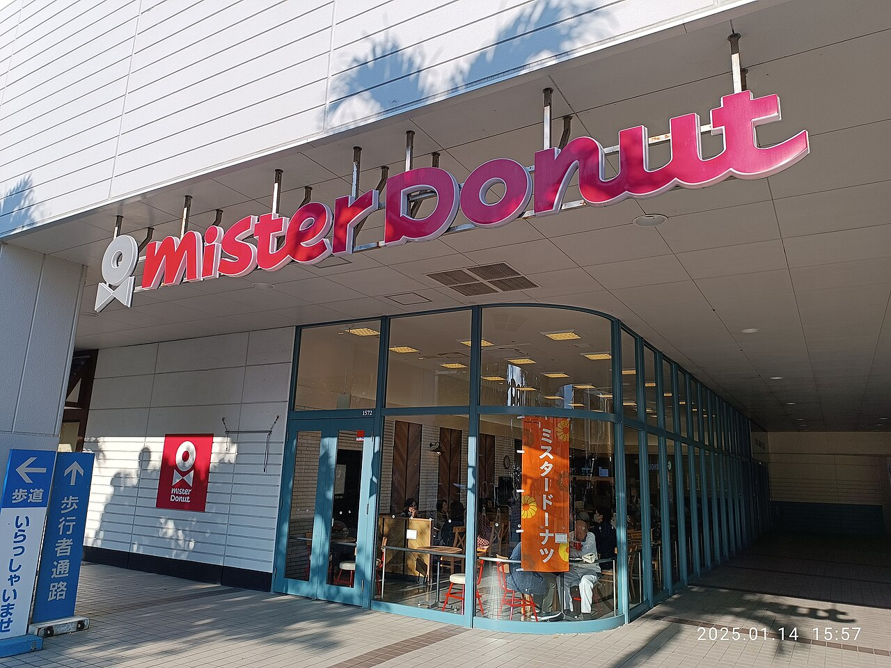
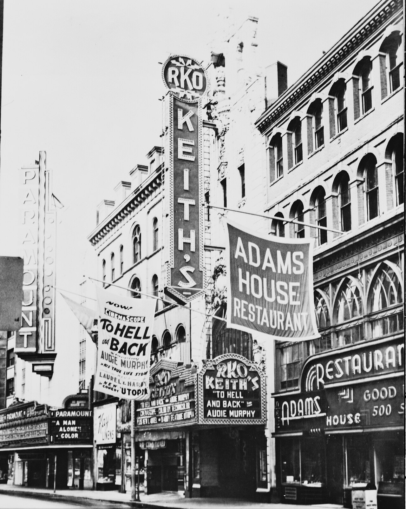
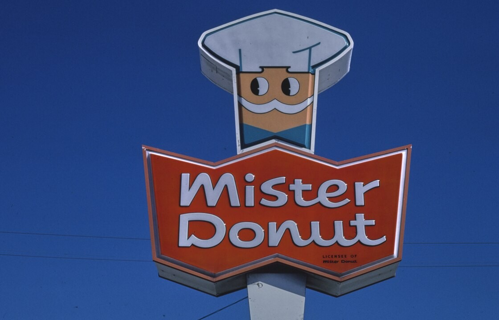
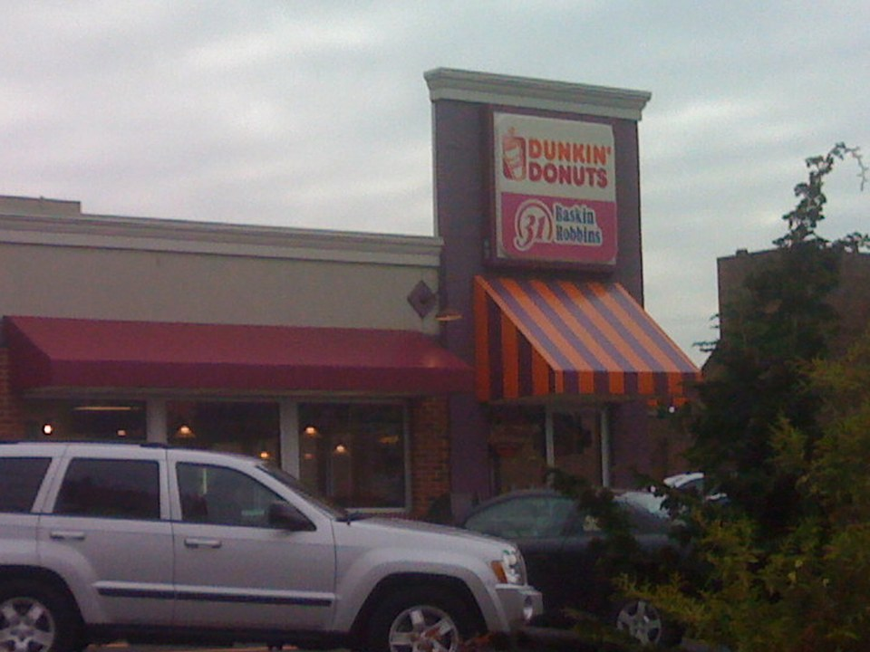
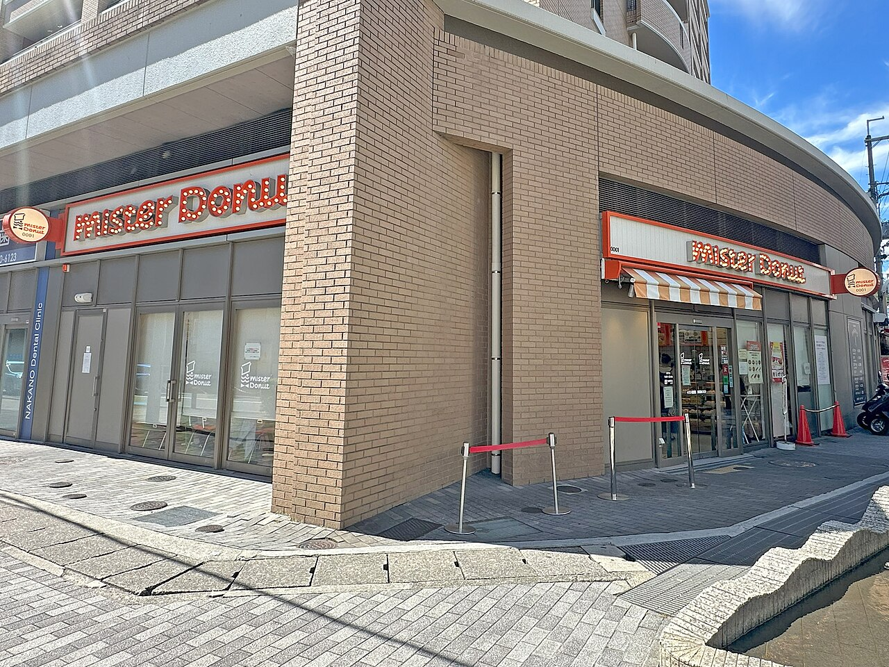
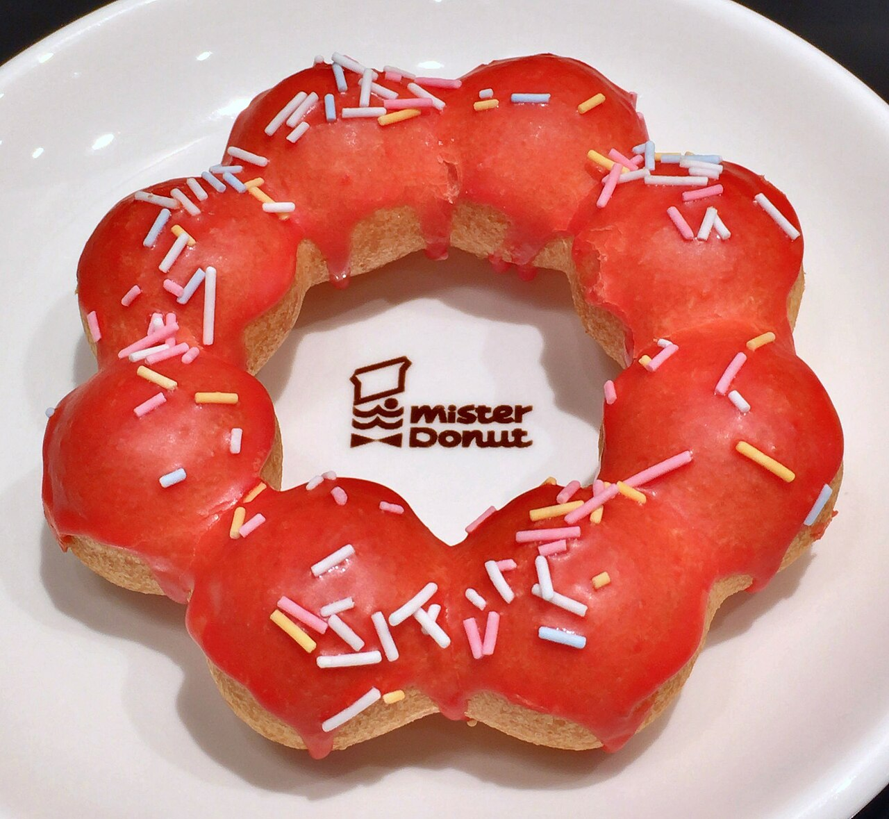
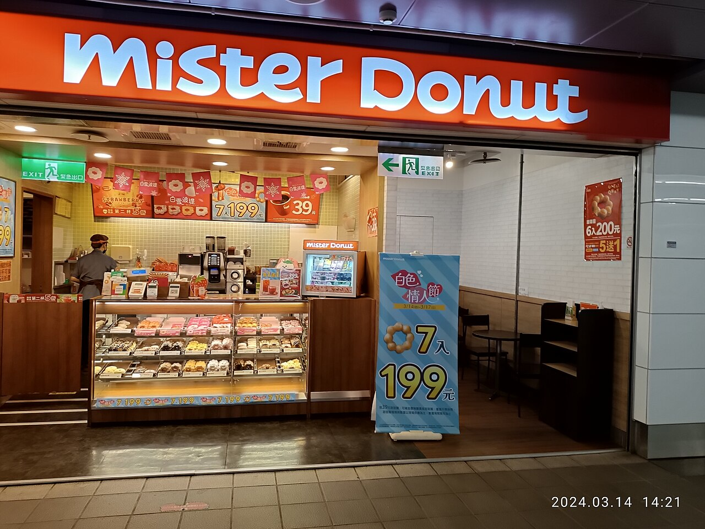
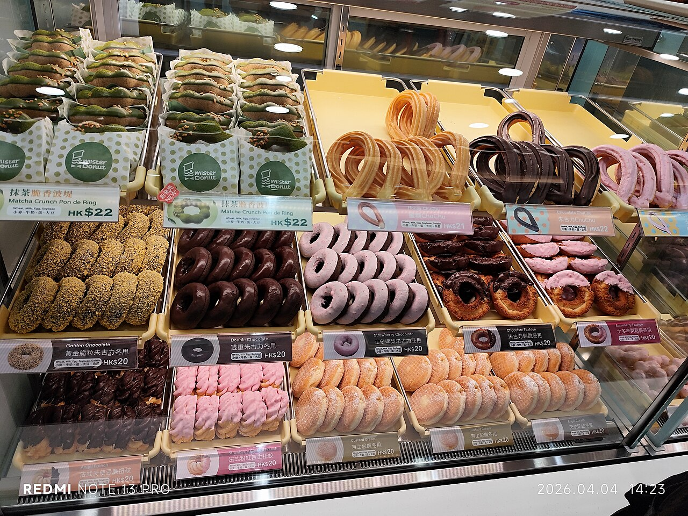

アメリカ中西部、イリノイ州の村ゴドフリー。朝4時、道ぞいの小さなドーナツ店に明かりがつきます。看板の文字は「Mister Donut」。2004年から、海軍を退役したシーザー・ブランコさん夫妻が営んでいる店です。
日本では1,000店をこえるミスタードーナツ（ミスド）。ところが生まれた国アメリカでは、2026年の報道でも、この名前で営業する店はここ1軒だけとされています。ふるさとでは消えかけたミスドが、なぜ日本では残ったのでしょうか。

ミスタードーナツの生まれはアメリカ。それなのにいま、アメリカでこの名前の店は1軒だけです。ライバルのダンキンとの関係から、日本で独自に育った道までを、2つの国の年表の帯と店の数のグラフで追ってみませんか。
アメリカ中西部、イリノイ州の村ゴドフリー。朝4時、道ぞいの小さなドーナツ店に明かりがつきます。看板の文字は「Mister Donut」。2004年から、海軍を退役したシーザー・ブランコさん夫妻が営んでいる店です。
日本では1,000店をこえるミスタードーナツ（ミスド）。ところが生まれた国アメリカでは、2026年の報道でも、この名前で営業する店はここ1軒だけとされています。ふるさとでは消えかけたミスドが、なぜ日本では残ったのでしょうか。
本当です。ミスドはアメリカで生まれ、北米で550店をこえるまで広がりましたが、1990年にライバルのダンキンに買われ、店の多くはダンキンに変わりました。一方の日本では、掃除の会社ダスキンがアジアでの権利を手に入れ、アメリカとは別の道で育ててきました。
ミスドが生まれたのは1950年代半ばのボストンです（1955年とも1956年ともいわれます）。創業者のハリー・ウィノカーは、ドーナツチェーン「ダンキンドーナツ」を始めたウィリアム・ローゼンバーグの義理の兄弟にあたる人でした。
2人はいっしょにダンキンを経営していましたが、店の広げ方をめぐって考えが合わず、ウィノカーは独立します。娘の夫デビッド・スレイターと始めた新しい店が、ミスタードーナツでした。

ミスドはフランチャイズで広がりました。本部が店の名前や作り方、材料を貸し、各地の店主がお金を出して店を開くしくみです。1970年にアメリカの食品会社インターナショナル・マルチフーズに売られたあとも店は増え、1980年代にはアメリカとカナダで550店をこえました。
転機は1989年から90年にかけてです。まずイギリスの飲料・食品会社アライド・ライオンズがダンキンを買い、そのダンキンが1990年、マルチフーズからミスドを買い取りました。
買い手がダンキンだったため、店はダンキンの名前にまとめられていきます。アメリカのミスドの多くは、看板をダンキンにかえるか、店を閉じました。切りかえには数年かかっています。
看板をかえずに残った店も、わずかにありました。ペンシルベニア州とオハイオ州の9店は組合をつくってミスドとして営業を続けましたが、2006年までに「ドーナツ・コネクション」という別の名前にかわっています。


では、なぜゴドフリーの店だけが名前を残せたのでしょうか。地元の観光案内によると、1990年の買収のあとも、家族で営む店のいくつかはダンキンに買い取られずに残りました。ゴドフリーの店も、そうして残った1軒とされますが、名前を使い続けられた理由について、はっきりした記録は見当たりません。
2024年には、アメリカに住む人がこの店を訪ねた投稿がネットの記事になりました。ショーケースには、日本のミスドでも1970年代から売られていたシナモンツイストなどが並んでいたそうです。
日本にミスドを運んだのは、ダスキンです。モップやマットを家庭や会社に貸す掃除の会社で、各地の加盟店とともに商売を広げてきました。創業者の鈴木清一はフランチャイズのしくみを学ぼうとアメリカへ渡り、1970年1月、ミスタードーナツ・オブ・アメリカと手を組む契約を結びます。
1号店は1971年4月、大阪府箕面市（みのおし）のスーパー、ダイエー箕面店の敷地に開きました。1983年には、ダスキンが日本とアジアでのミスドの商標（店の名前やマークを使う権利）と、店を広げる権利を手に入れます。アメリカの本部が買われる7年前のことでした。

日本のミスドは、日本の好みに合わせた商品を自分たちで作っていきます。1992年には、中華まんやめんを出す「ミスター飲茶（ヤムチャ）」を始めました。ドーナツの店で温かい食事もとれる形は、日本の店ならではです。
2003年には「ポン・デ・リング」が生まれます。お客への聞き取りで「食感」を求める声が多かったことから、もちもちした歯ごたえをめざした商品です。ブラジルのチーズパン「ポン・デ・ケージョ」がヒントだとされ、ミスドでいちばん売れる商品になりました。

日本のミスドは、2026年3月末で国内に1,067店あります。ダスキンはこの年から、営業している店ではなく「契約している店」で数えるように変えました。古い数え方では、2021年3月期に961店まで減ったあと、また増えてきています。
海外はもっと大きく、ダスキンが数える海外のミスドの拠点は約1.1万（2025年12月末）。子会社や現地の加盟店などが営む拠点を合わせた数で、日本の店とは数え方がちがいますが、規模の差ははっきりしています。
店はタイやフィリピン、台湾など、アジアの国と地域に広がっています。中国からは2019年に一度引き上げましたが、現地の会社と契約を結び直し、2026年9月28日、上海で約7年半ぶりに店を開きました。


上海など中国東部（華東地区）で、2029年12月末までに開くことをめざす店の数。いまは1店から2026年9月。宣伝会議 AdverTimes の記事による
ポン・デ・リングが2003年の発売から20年で売れた数2023年。現代ビジネスの記事による
日本のミスドの店がいちばん多かったときの数（営業している店で数えたもの）2013年3月期。マネーフォワードの記事による
1971年に日本へ来たドーナツチェーンは、ミスドだけではありません。同じ年の9月、ダンキンドーナツも東京・銀座に1号店を開いていました。運営したのは、西武・セゾングループの外食の会社です。
ところが日本では、ミスドが店を増やす一方、ダンキンは店を広げきれませんでした。運営していたディー・アンド・シーは1988年、牛丼の吉野家と合併します。吉野家は1980年に会社更生法を申し立て、同じグループのもとで立て直してきた会社でした（その話は「すき家は、吉野家から生まれた？」で）。
そして1998年、ダンキンはアメリカ軍の基地の中の店をのぞいて、日本から撤退しました。
アメリカではダンキンがミスドをのみこみ、日本ではミスドが残った。同じ年に海をこえた2つのチェーンは、国によって正反対の結末をむかえたのです。
次にミスドに入ったら、ショーケースのポン・デ・リングと、ハニーディップのような昔ながらの丸いドーナツを見くらべてみてください。丸いほうは、ゴドフリーの店にもいまも並ぶ、アメリカのミスドから受けついだ形といえそうです。